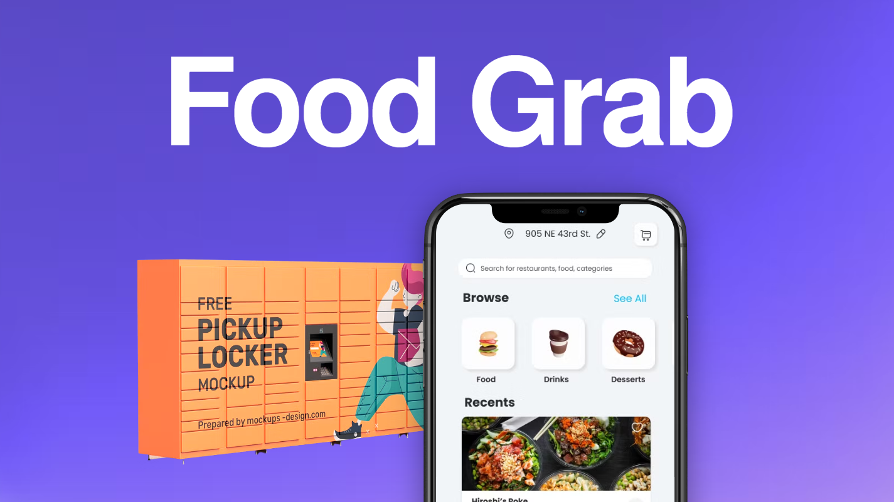
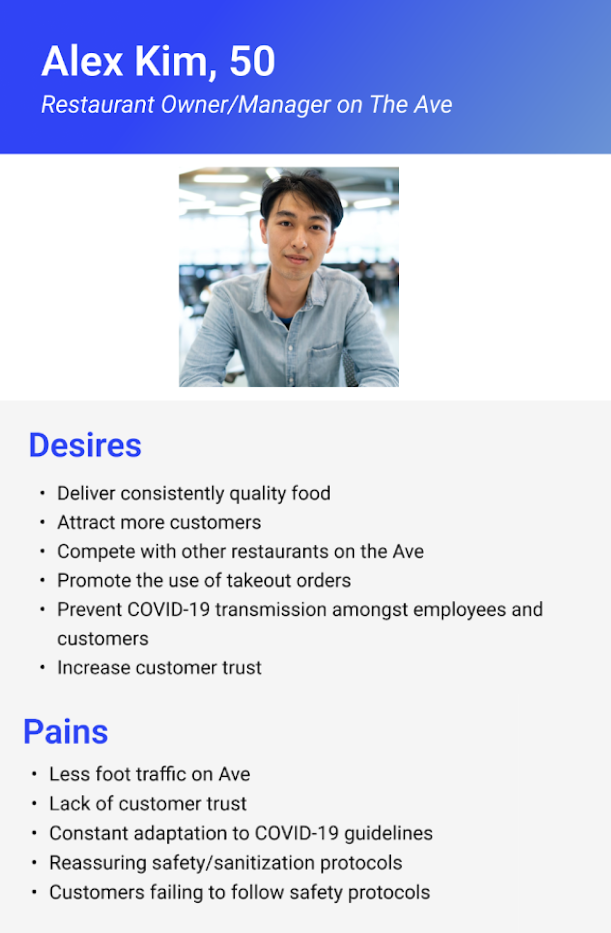
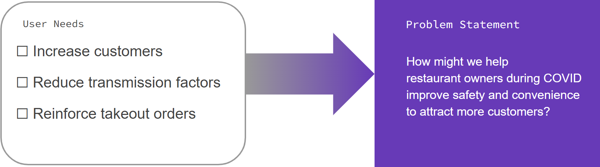
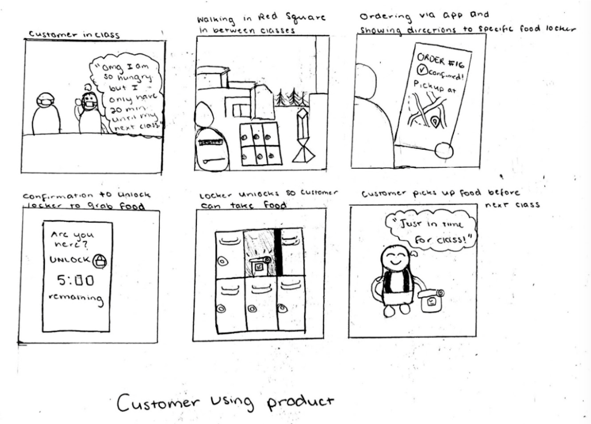
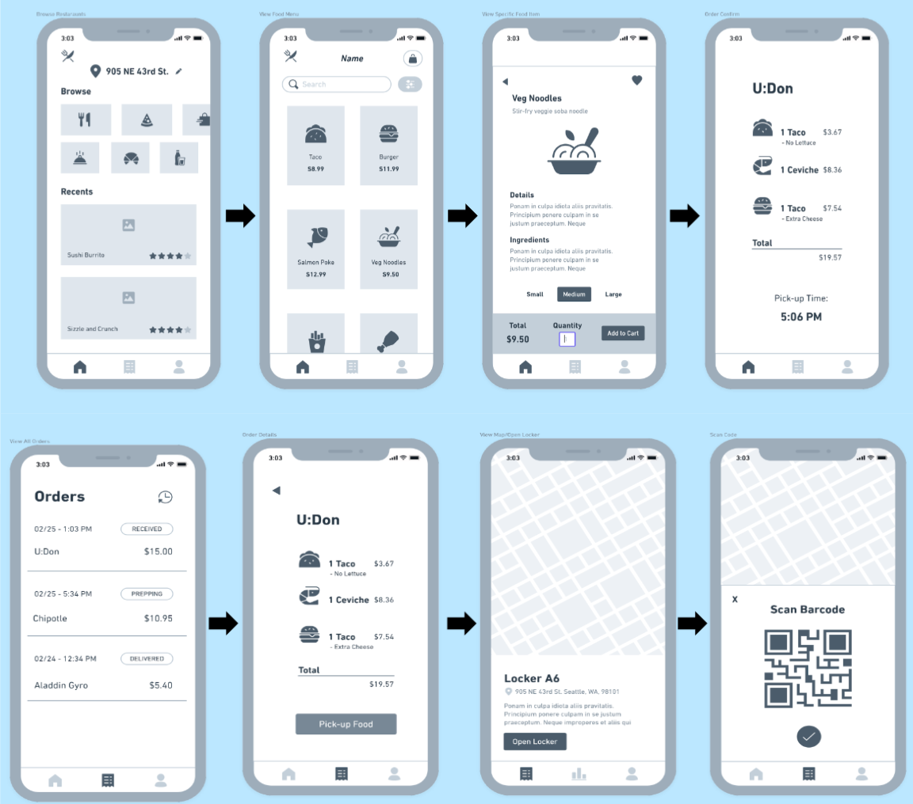
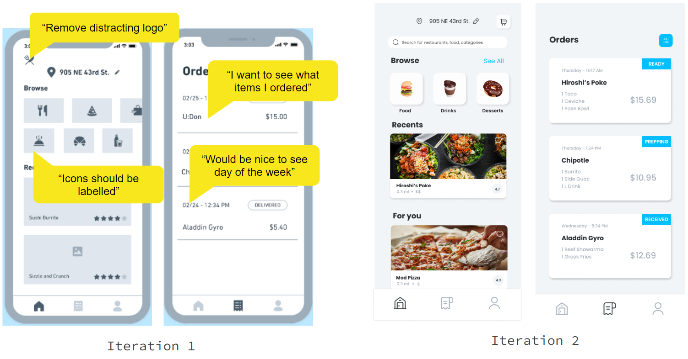
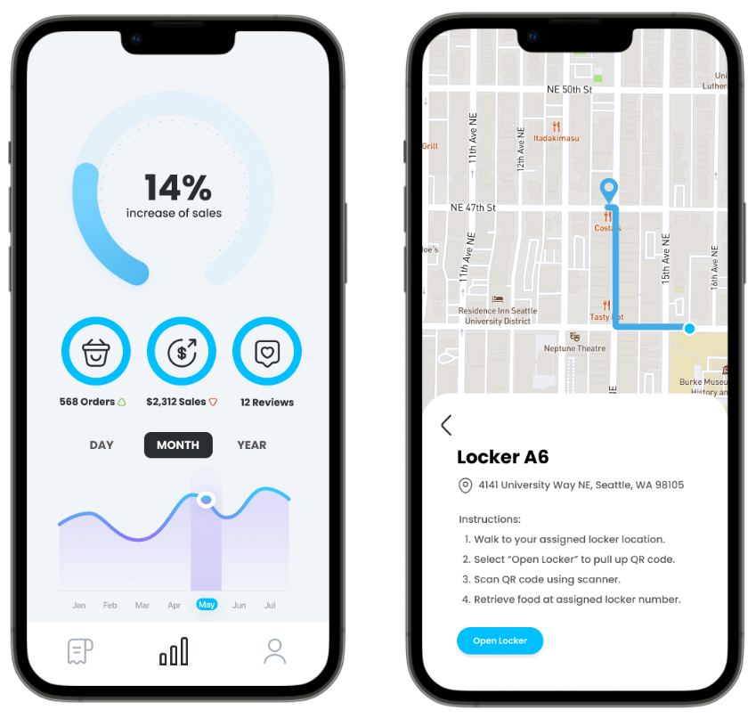

Food Grab
A locker takeout service that prioritizes COVID safety by reducing transmission risk.
Overview /
For a design course, I worked in a team of 3 to solve a problem of our choosing. We were interested in the problem space of restaurants struggling during COVID.
💬 Empathize /
To understand the needs of restaurant owners, my team conducted 3 interviews and devised a user persona.
🎯 Define /
Our problem statement summarized our user needs and the intent of our design.
💭 Ideate /
My team ideated several concepts and evaluated how well they satisfied our user needs.
📱 Prototype /
Now committed to our food locker idea, we assigned 1 member to work on the locker prototype while 2 of us built wireframes.
🥽 Test /
With a stakeholder, I conducted a usability test with 3 essential tasks and received feedback (example below).
Outcomes /
By the end of our 6-week sprint, my team delivered a Figma prototype (21 screens), physical prototype, and 10-minute presentation. Our next steps would be to assemble a team of engineers to build an MVP and reach out to restaurants to adopt Food Grab.